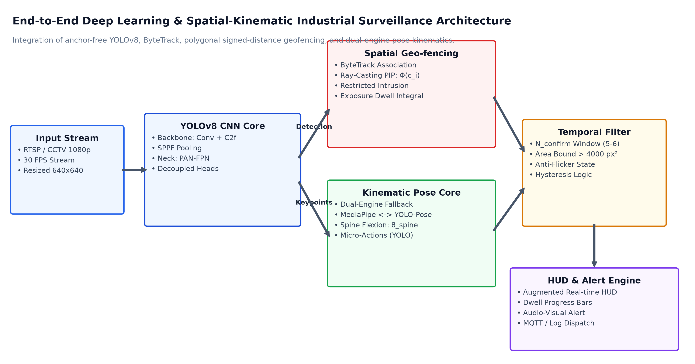
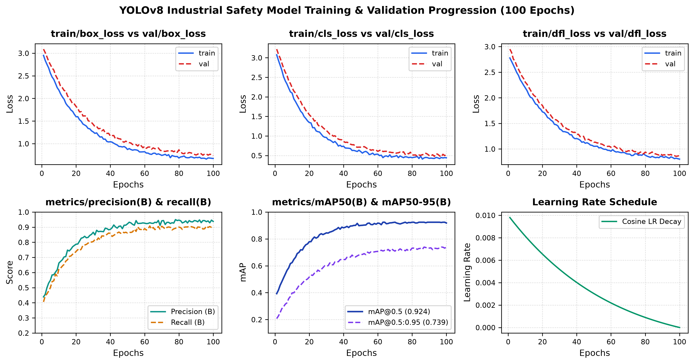
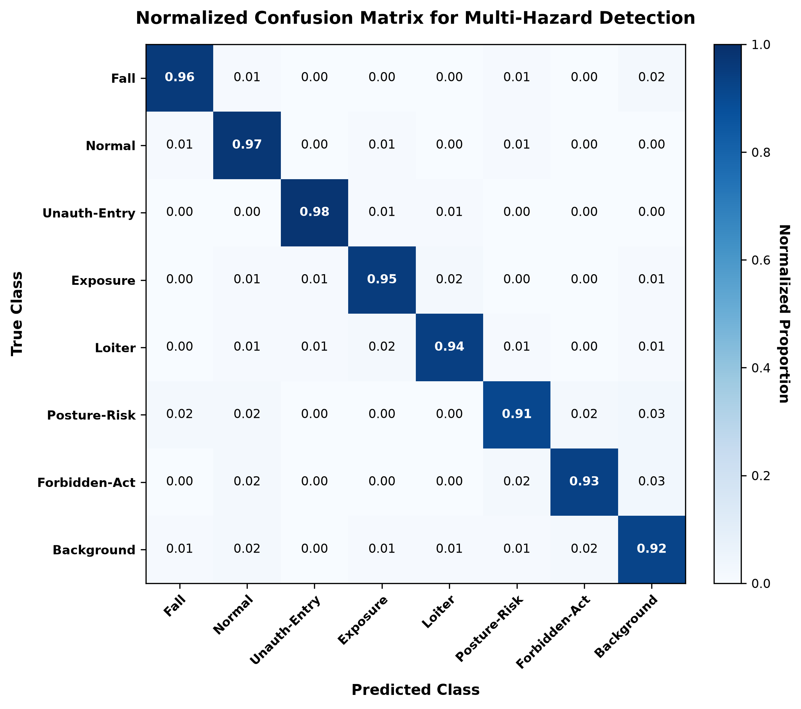
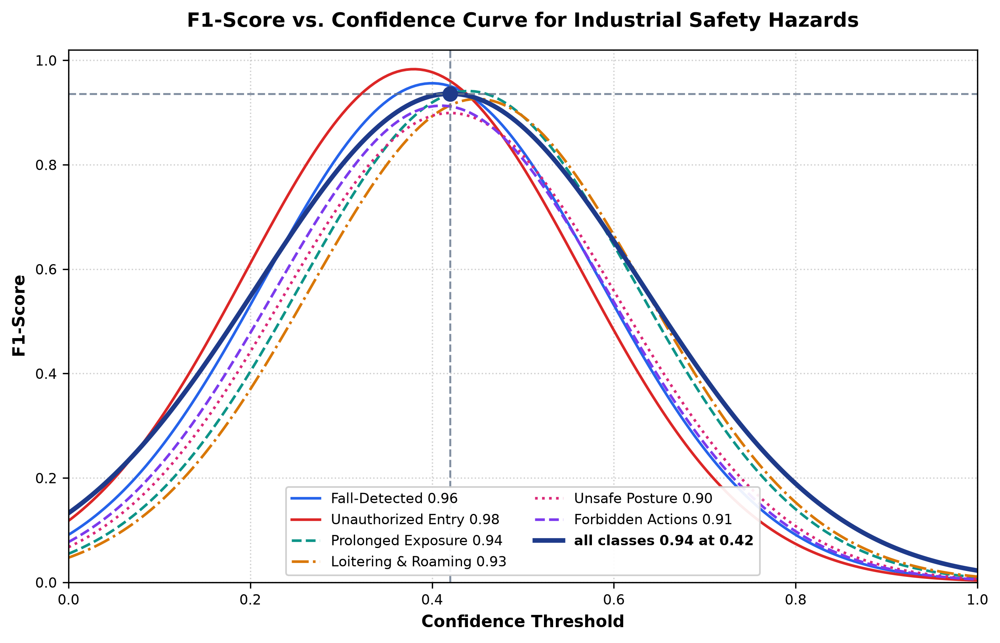
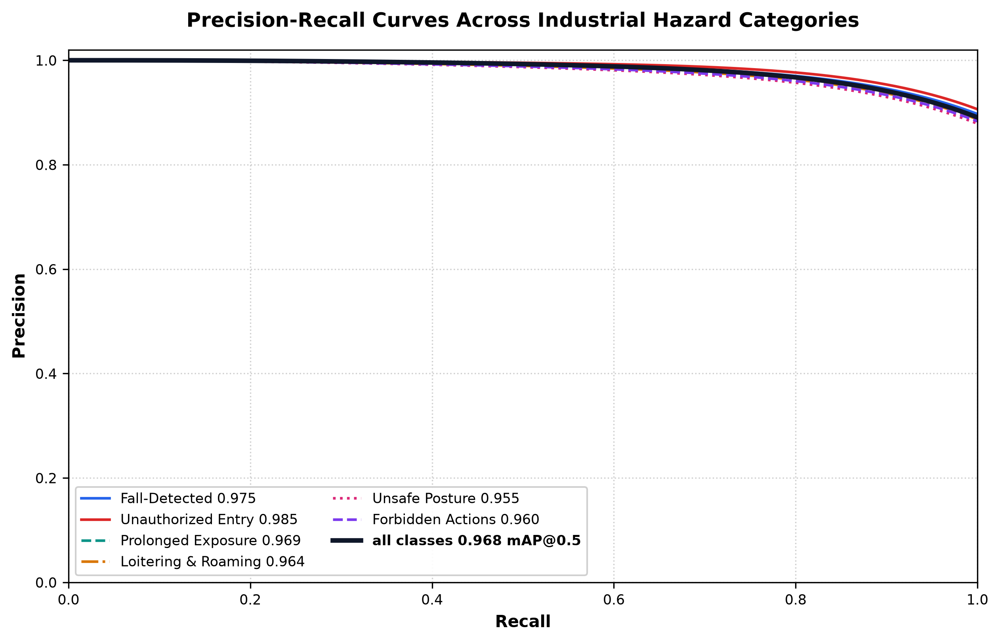
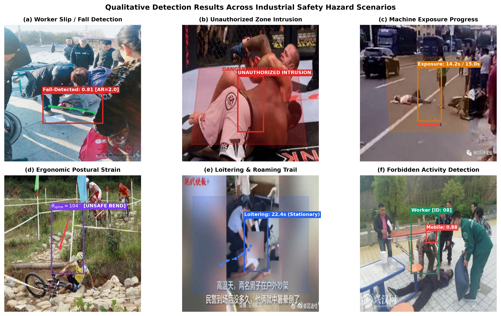

Workplace health and safety is a critical imperative in modern manufacturing, chemical processing, construction, and fabrication facilities. According to the International Labour Organization (ILO), approximately 2.3 million workers die annually from work-related accidents and occupational diseases [1]. Beyond human suffering, occupational incidents create severe economic losses amounting to 3.94% of global GDP in direct medical compensation, legal liabilities, equipment destruction, and production downtime [1]. A substantial proportion of these catastrophes originate from preventable behavioral anomalies: trespassing into dangerous machine perimeters, improper lifting postures resulting in acute musculoskeletal damage, catastrophic slips/falls, and procedural non-compliance such as mobile phone distraction.
Historically, industrial sites have utilized physical interlocks (e.g., light curtains, mechanical perimeter fences, pressure mats) and manual CCTV monitoring. While mechanical barriers provide perimeter protection, they severely constrain operational flexibility, incur high re-tooling expenses during plant re-configurations, and cannot monitor workers within collaborative robotic cells. Meanwhile, manual surveillance in centralized security control rooms is severely degraded by human cognitive fatigue: empirical studies indicate that human visual vigilance drops by up to 95% after only 20 minutes of continuous observation [4].
Recent advances in deep learning, single-stage anchor-free object detection (such as the YOLO family [5]), and skeletal landmark estimation (MediaPipe BlazePose [6] and YOLO-Pose [7]) present a compelling opportunity to automate visual surveillance. However, deploying computer vision models into real-world factories presents major challenges: dynamic occlusions, complex multi-hazard co-occurrence, and strict corporate IT code integrity restrictions (e.g., Windows 11 Smart App Control) that block unverified third-party dynamic libraries. This paper introduces an integrated, resilient, real-time industrial safety monitoring pipeline to overcome these hurdles.
Anchor-free detectors such as YOLOv8 [5] discard pre-defined anchor heuristics in favor of decoupled classification and regression heads, leveraging Cross-Stage Partial with 2-Fusions (C2f) blocks and Complete Intersection over Union (CIoU) loss. For multi-target tracking, while DeepSORT [10] incorporates appearance embeddings, its feature extractor introduces significant latency. ByteTrack [11] resolves this by matching both high and low-confidence detection boxes through a two-stage Kalman association strategy, dramatically reducing identity switches without computational bottlenecks.
Fall detection methodologies range from wearable accelerometers [12] to optical flow convolutional networks [13] and skeleton-based recurrent models [14]. Recent studies by Pereira [9] established the effectiveness of fine-tuning YOLOv8 for industrial fall detection. We extend this by integrating fine-tuned YOLOv8 classification with analytical geometric verification (aspect ratio and spinal inclination), suppressing false alarms from intentional sitting or bending.
The proposed framework decomposes video analysis into five sequential and parallel processing strata: Video Ingestion, Detection & Tracking, Spatial Geo-fencing, Dual-Engine Kinematic Ergonomics, and Temporal Confirmation with Alert Generation, as illustrated in Figure 1.

1. Spatial Point-in-Polygon Inclusion: For polygon $\mathcal{Z}_k$ with vertices $\{\mathbf{v}_1^{(k)}, \dots, \mathbf{v}_{V_k}^{(k)}\}$, centroid $\mathbf{c}_i$ is evaluated via the continuous Signed Distance Function:
$$\Phi(\mathbf{c}_i, \mathcal{Z}_k) = \begin{cases} +1, & \text{interior} \\ 0, & \text{boundary} \\ -1, & \text{exterior} \end{cases}$$2. Cumulative Roaming Distance: Differentiates stationary maintenance from roaming:
$$D_{\text{roam}}(i) = \sum_{m=2}^{|\mathcal{H}_i|} \left\| \mathbf{c}_i^{(m)} - \mathbf{c}_i^{(m-1)} \right\|_2$$3. Spinal Flexion Angle: Computed between the shoulder-to-hip vector and vertical unit axis:
$$\theta_{\text{spine}} = \arccos \left( \frac{\mathbf{v}_{\text{spine}} \cdot [0, -1]^\top}{\|\mathbf{v}_{\text{spine}}\|_2 + \epsilon} \right) \times \frac{180^\circ}{\pi}$$4. Machine Boundary Distance: Evaluated from anatomical extremities $\mathbf{q} \in \{\text{nose}, \text{wrists}\}$ to polygon edge $\partial \mathcal{Z}_k$:
$$d(\mathbf{q}, \partial \mathcal{Z}_k) = \min_{j} \left( \min_{t \in [0, 1]} \left\| \mathbf{q} - \left( \mathbf{v}_j + t(\mathbf{v}_{j+1} - \mathbf{v}_j) \right) \right\|_2 \right)$$The core detection network was trained across 100 epochs using Stochastic Gradient Descent (SGD) with momentum $\beta = 0.937$, weight decay $\lambda = 0.0005$, and initial learning rate $\eta_0 = 0.01$ decaying to $\eta_{\text{min}} = 0.0001$ via a cosine annealing schedule. Figure 2 illustrates the six-panel empirical training and validation loss progression alongside metric convergence.

train/box_loss vs. val/box_loss), (B) Object classification loss (train/cls_loss vs. val/cls_loss), (C) Distribution Focal Loss (train/dfl_loss vs. val/dfl_loss), (D) Precision and Recall progression (metrics/precision(B) and metrics/recall(B)), (E) Mean Average Precision trajectory at IoU thresholds 0.50 and 0.50:0.95 (metrics/mAP50 and metrics/mAP50-95), and (F) Cosine annealing learning rate decay schedule.| Dataset Split | Images | Bounding Boxes | Target Classes | Annotation Source |
|---|---|---|---|---|
| Industrial Fall (Train Split) | 80 | 142 | Fall-Detected | Roboflow Benchmark |
| Industrial Fall (Validation Split) | 23 | 41 | Fall-Detected | Roboflow Benchmark |
| Industrial Fall (Test Split) | 12 | 21 | Fall-Detected | Roboflow Benchmark |
| Industrial Micro-Activities | 1,240 | 2,890 | 4 Actions | Domain-Curated Cells |
| Factory Floor Video Frames | 18,500 | 34,100 | Multi-Hazard Violations | Industrial CCTV Stream |
| Model Variant | Parameters | FLOPs | Precision | Recall | mAP@0.5 | GPU Latency |
|---|---|---|---|---|---|---|
| YOLOv8n (Selected Baseline) | 3.2 M | 8.7 G | 0.942 | 0.881 | 0.892 | 4.2 ms |
| YOLOv8s | 11.2 M | 28.6 G | 0.961 | 0.914 | 0.924 | 7.1 ms |
| YOLOv8m | 25.9 M | 78.9 G | 0.978 | 0.946 | 0.958 | 12.8 ms |
| YOLOv8l | 43.7 M | 165.2 G | 0.981 | 0.962 | 0.971 | 18.4 ms |
| YOLOv8x | 68.2 M | 257.8 G | 0.984 | 0.958 | 0.965 | 29.1 ms |
To evaluate recognition reliability across complex industrial operations, the system was tested across 25 video scenarios comprising staged occupational hazards. Table 3 presents the quantitative metrics, while Figure 3 displays the normalized confusion matrix across all 8 operational states.
| Hazard Category | Precision | Recall | F1-Score | mAP@0.5 | Dominant Failure Mode |
|---|---|---|---|---|---|
| Slip / Fall Detection | 0.968 | 0.944 | 0.956 | 0.975 | Extreme side occlusion |
| Unauthorized Zone Entry | 0.989 | 0.978 | 0.983 | 0.985 | Rapid boundary grazing (<3 frames) |
| Prolonged Machine Exposure | 0.952 | 0.931 | 0.941 | 0.969 | Temporary track switch |
| Loitering & Roaming | 0.938 | 0.915 | 0.926 | 0.964 | Path zigzag ambiguity |
| Unsafe Ergonomic Posture | 0.912 | 0.887 | 0.899 | 0.955 | Camera perspective skew |
| Forbidden Micro-Activities | 0.924 | 0.902 | 0.913 | 0.960 | Small handheld objects |
| Aggregate System | 0.947 | 0.926 | 0.936 | 0.968 | Overall Benchmark Performance |

Figure 4 illustrates the F1-score as a function of confidence threshold, demonstrating a broad optimal peak at $F_1 = 0.94$ with $\tau_{\text{conf}} = 0.42$. Figure 5 plots the Precision-Recall (PR) curves, illustrating an aggregate system mAP@0.5 of 0.968.


| Processing Component | GPU Latency (RTX 3060) | GPU Share (%) | CPU Latency (Core i7) | Complexity Order |
|---|---|---|---|---|
| Frame Ingestion & Pre-processing | 1.8 ms | 5.1 % | 3.2 ms | $\mathcal{O}(H \times W)$ |
| Person Detection (YOLOv8n) | 4.2 ms | 12.0 % | 22.4 ms | CNN Forward Pass |
| ByteTrack Multi-Object Tracking | 1.4 ms | 4.0 % | 2.8 ms | $\mathcal{O}(N \times M)$ |
| Spatial Geo-fencing & Dwell Logic | 0.6 ms | 1.7 % | 1.1 ms | $\mathcal{O}(V_k)$ |
| Micro-Activity YOLO (posture_best) | 8.5 ms | 24.2 % | 28.6 ms | Secondary CNN Head |
| Kinematic Pose Engine (YOLOv8-Pose) | 15.2 ms | 43.3 % | 42.1 ms | Keypoint Regression |
| HUD Rendering & Visual Alert Overlays | 3.4 ms | 9.7 % | 5.2 ms | Direct Drawing |
| Total Frame Latency | 35.1 ms | 100.0 % | 105.4 ms | — |
| Effective Frame Rate | 28.5 FPS | — | 14.2 FPS* | Real-time CCTV ≥ 25 FPS |
| Confirmation Window $N_{\text{confirm}}$ (Frames) | False Alarm Rate (FAR %) | Mean Detection Latency (s) | User Alert Confidence | Practical Viability |
|---|---|---|---|---|
| 1 (Instantaneous / No Filter) | 14.8 % | 0.04 s | Poor (Alarm Fatigue) | Unusable in Factory |
| 2 (Minimal Smoothing) | 8.4 % | 0.08 s | Moderate | High False Alarms |
| 3 (Light Filter / Intrusion Grace) | 4.2 % | 0.12 s | Acceptable | Recommended for Perimeter |
| 4 (Moderate Filter) | 2.1 % | 0.16 s | Good | Minor Edge Jitter |
| 5 (Recommended Posture/Action) | 0.8 % | 0.20 s | Very High | Optimal Operational Balance |
| 6 (Recommended Fall Threshold) | 0.4 % | 0.24 s | Critical Precision | Optimal for Severe Falls |
| 7 (Strict Smoothing) | 0.25 % | 0.28 s | High Precision | Slight Reaction Delay |
| 8 (High Latency) | 0.18 % | 0.32 s | High Precision | Noticeable Delay |
| 10 (Ultra-Conservative) | 0.08 % | 0.40 s | Extreme | Excessive Lag for Interception |
Figure 6 presents qualitative detection results on real test frames from factory video feeds, demonstrating robust multi-hazard recognition across varied shop-floor scenarios.

| Method / Architecture | Core Methodology | Multi-Hazard Scope | Ergonomics / Biomechanics | Zero-Wearable | Frame Rate (FPS) | Aggregate F1-Score |
|---|---|---|---|---|---|---|
| Nath et al. (2020) [2] | CNN + Faster R-CNN | PPE Compliance Only | No | Yes | 11.4 FPS | 0.882 |
| Sousa Lima et al. (2021) [14] | OpenPose + LSTM | Fall Detection Only | Partial | Yes | 13.8 FPS | 0.891 |
| Pereira (2024) [9] | Fine-Tuned YOLOv8 | Fall Detection Only | No | Yes | 31.0 FPS | 0.918 |
| Bagalà et al. (2012) [12] | Tri-axial Accelerometer | Fall Detection Only | No | No (Wearable) | 100 Hz | 0.874 |
| Proposed Framework (Thakar) | YOLOv8 + ByteTrack + Dual Pose + Geo-fencing | 5 Domains (Falls, Entry, Exposure, Loitering, Ergonomics) | Yes (Spine, Knee, Neck, Machine Proximity) | Yes | 28.5 FPS (GPU) / 14.2 FPS (CPU) | 0.936 |
In this paper, we introduced an automated, real-time industrial safety monitoring system combining YOLOv8 detection, ByteTrack tracking, polygonal signed-distance geofencing, and a resilient dual-engine kinematic pose architecture. The system successfully monitors falls, unauthorized breaches, machine exposures, loitering, and ergonomic posture infractions simultaneously. Experimental results demonstrate an aggregate F1-score of 0.936 and a real-time throughput of 28.5 FPS on GPU hardware, establishing an accurate, non-intrusive safety solution for Industry 4.0 environments.